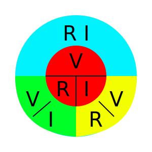
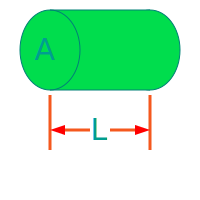
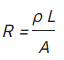
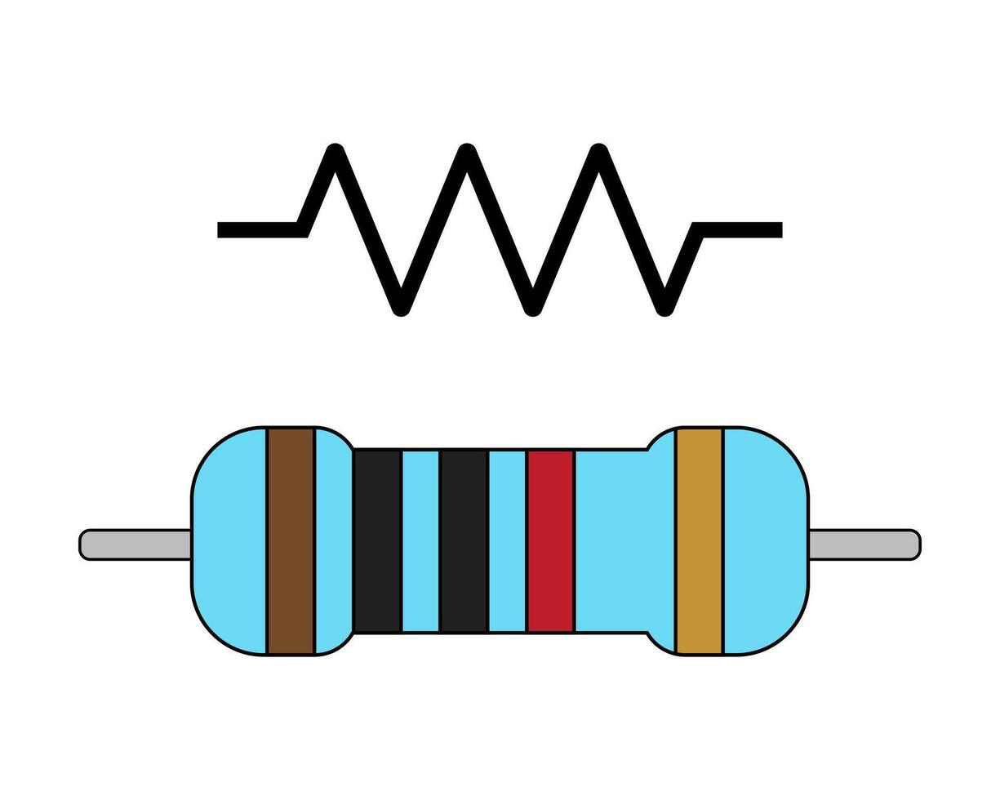
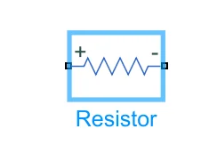
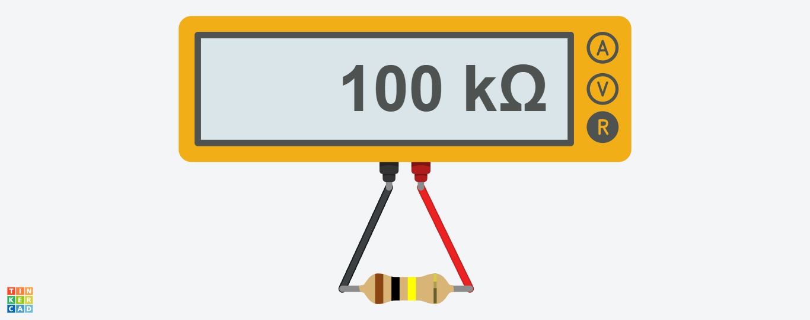

Resistencia

¿Que es?
Un resistor es un componente electrónico, considerado como un componente básico pasivo, consta de dos terminales y no tiene polaridad, su principal función es la disipación de calo, proceso en el cual se convierte la energia eléctica en energia termina, es decir calor, la unidad de medida del resistor es de ohm (Ω). Básicamente es un componente que controla el flujo de electrones entre sus terminales, por lo tanto, es un elemento pasivo con resistencia electrica al flujo de carga, en otras palabras, tiene resistencia al flujo de electrones. La ley de Ohm define la relacion voltaje-corriente caracteristica de de una resistencia ideal:V = RI
Donde:
- V es la tensión entre las dos terminales del resistor.
- I es la corriente entre las dos terminales del resistor.
- R es el valor del resistor

¿Cómo se calcula la resistencia eléctrica?
Si el material de una resistencia es homogéneo y tiene un área transversal constante, como el cilindrico mostrado en la Figura, entonces la resistencia está dada por: 
- ρ es la resistividad o resistencia del material.
- L es la longitud del alambre.
- A es el área transversal.
- Al aumentar la medida de la sección transversal del conductor, la resistencia eléctrica al flujo de las cargas disminuye.
- Al aumentar la medida de longitud del conductor, la resistencia al flujo de las cargas aumenta.
Mediante fórmula se deduce que:
En la siguiente tabla se presentan resistividades de conductoras comunes.
| Resistividad de Conductores | |
|---|---|
| Material | Resistividad |
| Aluminio | 2.28 x 10-8 Ωm |
| Carbono | 4 x 10-5 Ωm |
| Cobre | 1.7 x 10-8 Ωm |
| Constatán | 44 x 10-8 Ωm |
| Hierro | 10 x 10-8 Ωm |
| Oro | 2.22 x 10-8 Ωm |
| Plata | 1.59 x 10-8 Ωm |
| Tungsteno | 5.5 x 10-8 Ωm |
| Hierro | 8.9 x 10-8 Ωm |
| Platino | 10.6 x 10-8 Ωm |
| Germanio | 0.46 Ωm |
| Silicio | 640 Ωm |
| Estaño | 11.5 x 10-8 Ωm |
| Grafito | 60 x 10-8 Ωm |
Tabla de colores de una resistencia

Diodo Led
Simbolo Esquematico

¿Para que sirve?
Algunas funciones comunes de las resistencias incluyen:- Regulador de voltaje Se pueden ulitilizar resistencias para bajar el voltage en determinados puntos del circuito diseñando el valor de resistencia adecuado y garantizando que los dispositivos o componentes circundantes reciban un voltaje que coincida con sus necesidades operativas.
- Regulador de corriente Las resistencias funcionan como reguladores de corriente al limitar la cantidad de corriente que fluye en un circuito electronico. La resistencias pueden controlar el flujo de corriente para que se ajuste dentro de los limites deseados estableciendo la resistencia correcta. Esto es util para proteger los componentes sensibles del circuito contra sobrecorrientes que pueden causar daños o mal funcionamiento.
- Divisor de voltaje Las resistencias se pueden utilizar como divisores de voltaje en circuitos. Al colocar la resistencia en una configuración determinada, como un divisor de voltaje, el valor de voltaje en ciertos pintos del circuito se puede ajustar según sea necesario. Esto proporciona flexibilidad en el diseño de circuitos electrónicos para lograr lo deseado valores de voltaje en varios puntos.
- Blindaje de componentes Las resistencias funcionan como protectores de otros componentes electrónicos contra corrientes excesivas. Colocando una resistencia como parte de un circuito que funciona como regulador de corriente y protege los componentes más sencibles de daños causados por corrientes que exceden los limites permitidos. Las resistencias se convierten en un componente clave para garantizar la estabilidad y la seguridad operativa de un circuito electrónico.
¿Como funciona?
Un resistor (o resistencia) limita el flujo de corriente eléctrica en un circuito al ofrecer oposición al paso de los electrones. Funciona convirtiendo el exceso de energia eléctrica en calor mediante colisiones atómicas (efecto Joule), permitiendo reducir la corriente y dividir el voltaje en componentes electrónicos.
Caracteristicas Principales
- Funcionamiento y Polaridad: Emiten fotones cuando los electrones atraviesan la unión P-N. Tienen polaridad definida: el ánodo (+) es la pata larga y el cátodo (-) la corta. FUncionan solo en polarización directa.
- Eficiencia y Consumo: Ofrece gran potencia lumínica con muy bajo consumo de energía, siendo más eficientes que las bombillas tradiciolaes.
- Voltaje y Corriente: Requieren bajos voltajes (generalmente 1.5V - 2.5V) y pequeñas corrientes (aprox. 20mA - 40mA). Necesitan una resistencia en serie para limitar la corriente y evitar daños.
- Vida útil y Durabilidad: Tienen una vida util muy superior a las bombillas convencionales, llegando a superar las 60,000 horas. Son resistentes a vibraciones y golpes.
- Emisión de Luz: Ofrecen luz uniforme, inmediata, sin parpadeosy en diversos colores según el material semiconductor (GaAs, GaP, GaN)
- Temperatura y Emisión: Producen luz sin apenas generar calor (fríos al tacto) y no emiten radiación UV ni infrarrojo.
- Sostenibilidad: No contienen elementos tóxicos (como mercurio) y son reciclables.
Simbolo y Pinout

Simbolo Electrico

Si aplica, patillaje
Un diodo LED (Diodo Emisor de Luz) tiene patillaje polarizado, lo que significa que tiene un lado positivo y uno negativo que deben conectarse correctamente para que funcione.
Ejemplo Practico
Vamos a realizar un ejercicio basico y practico de como medir una resistencia con multimetro.
Lista de componentes
- 1 Resistor/Resistencia
- 1 Multimetro
- 1 Protoboard (Opcional)
En la siguiente imagen se muestra como medir el valor de una resistencia por medio de un multimetro. Nota: Poner el multimetro a Ohmios para poder medir un resistor. 
Error Comunes
Principales Fallas y Errores Técnicos:
- Sobrecarga de potencia:Exceder la capacidad de disipación de calor (P = I2R) provoca que la resistencia se quema, se carbonice o se abra (circuito abierto).
- Alteración del valor (Deriva): Las resistencias pueden aumentar su valor óhmico debido al calor prolongado o envejecimiento, superando su tolerancia.
- Lectura incorrecta de colores: Confundir la banda de tolerancia (generalmente dorada/plateada) y leer el componente al réves, lo que invierte los digitos significativos.
- Cortocircuito o Circuito Abierto: Una resistencia puede fallar poniendose en corto (baja a casi 0 Ω) o, más comúnmente, abriendose (resistencia infinita), interrumpiendo el flujo de corriente.
- Daño Mecánico: Flexionar, torcer o someter a vibraciones excesivas la resistencia durante el montaje (especialmente en resistencias derivación) puede romper sus terminales internas.
- Efectos de Temperatura: No tomar en cuenta el coeficiente de temperatura, donde el valor real cambia significativamente en entornos extermos.
- Uso de Componentes Inadecuados: Usar resistencias de pelicula de carbono donde se requieren de pelicula metálica (mayor precisión) o de alambre (mayor potencia).